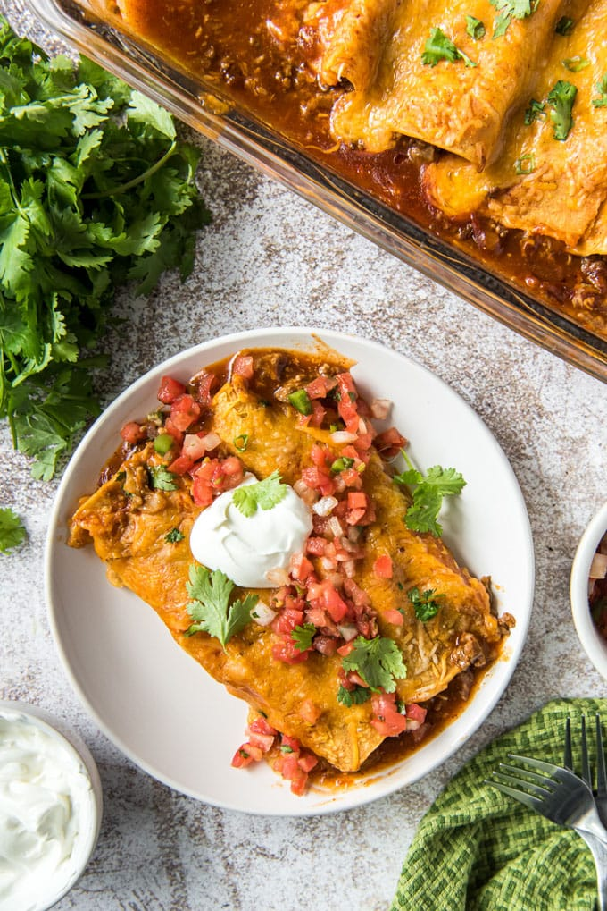

Beef Enchiladas

Description
This recipe will make 10 beef enchiladas in almost no time with very little effort. It's beef and cheese
in a corn tortialla, what more could you want? The toppings of sour cream, lettuce, tomato, etc. are all
optional.
I personally enjoy these with no toppings, simple is still delicious.
Ingredients
- 1 Lb Ground Beef
- 1 small white onion diced
- 1 garlic clove minced
- 2 tablespoons taco seasoning
- 1/2 teaspoon cumin
- 1/4 cup water
- 10 corn tortillas
- 28 oz red enchilada sauce
- 3 cups freshly shredded cheese
- optional: sour cream, pico de gallo or salsa, diced avocado, fresh cilantro
Steps
- Heat a large skillet over medium-high heat with a tablespoon of olive oil.
- Add the diced onions and cook, stirring frequently until they begin to soften.
- Add the ground beef and minced garlic. Cook beef, breaking up with a spoon,
until no longer pink; 5-7 minutes. Drain excess grease or soak up with paper towels.
- Sprinkle taco seasoning and cumin over the beef and stir in ¼ cup of water. Continue
to cook, stirring often, until water is absorbed.
- Preheat oven to 350℉. Pour ½ a cup of enchilada sauce in the bottom of a 13×9-inch
baking dish and spread evenly.
- Heat remaining sauce in a small-medium size skillet, just until it begins to bubble,
then remove from heat.
- Wrap a stack of 10 corn tortillas in a clean kitchen towel and microwave on high for
30 seconds to a minute. Dip a tortilla in the enchilada sauce to coat both sides
then lay flat on a cutting board or plate. Add a small amount of the meat mixture
(about 3 tablespoons) down the center of the tortilla, then top with about 1-2
tablespoons of shredded cheese. Roll up both sides and place seam-side down in the
prepared baking dish. Repeat with remaining tortillas and meat.
- Pour remaining sauce evenly over the enchiladas and top with remaining shredded cheese.
- Bake uncovered for about 25 minutes, or until cheese is melted and sauce is bubbly.
- Let sit 5-10 minutes before serving. Garnish as desired with optional toppings like sour
cream, pico de gallo, avocado, sliced green onions or cilantro.
Home